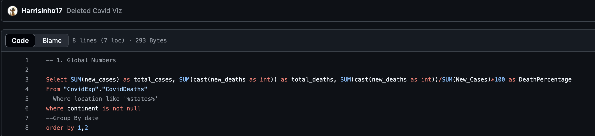
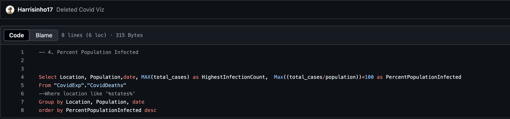
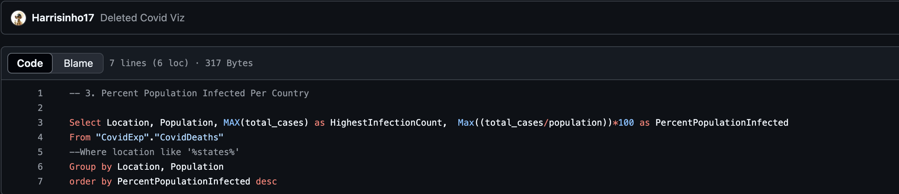
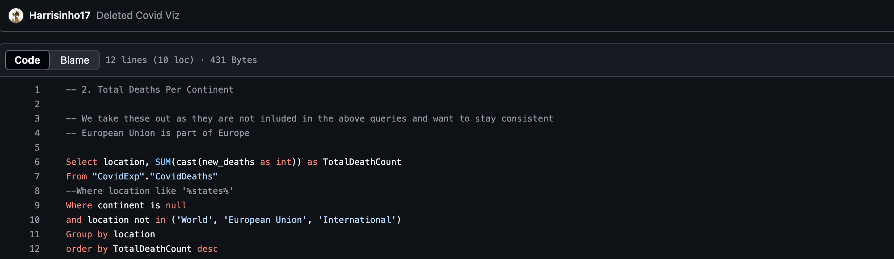

🦠 Sars-COV-2 Data Analysis

Project Overview
This dashboard,developed as my inaugural analytics project, provides a comprehensive overview of the global pandemic’s impact. It begins by presenting key global statistics—including total cases, recoveries, and fatalities to offer a quick snapshot of the situation worldwide. A heat map follows, visually representing the percentage of the population infected in each country, with darker shades indicating higher infection rates. A subsequent bar graph compares total deaths across continents, highlighting Europe as having the highest fatalities and Oceania the lowest. Finally, a line graph tracks the evolution of the infection rate over time, delivering valuable insights into how the pandemic has progressed.
This was my first data analysis project, guided by a YouTube video from AlexTheAnalyst. Feel free to click on the Github repository link to see more.
Objective
Clean, Manipulate, explore and visualize COVID-19 data to provide insights into the pandemic's impact.
Create a comprehensive pandemic dashboard integrating data into Tableau.
Features
SQL Techniques: Utilizes joins, Common Table Expressions (CTEs), temporary tables, window functions, aggregate functions, creating views, and data type conversions.
Data Analysis: Queries to identify infection and death rates, likelihood of death from COVID-19, and comparison of death counts across continents.
Advanced SQL Features: Includes rolling sums of vaccinations, intermediate calculations using CTEs and temporary tables, and creation of views for future visualizations.
SQL Visualization Scripts
Covid Glabal Numbers

Percent of Population Infected

Percent Population Infected By Country

Covid Deaths Per Continent

Results
Global Infected Numbers
The Analysis of Global Numbers of Infection from SARS-CoV-2 shows that out 775 million cases world wide 7 million resulted in death resulting in a .91% fatality rate. This could be due to the fact that this analysis was done after Covid had been studied and vaccines were created resulting in a plateu in the number of deaths.
Total Deaths per Continent
The Analysis of Percent Population infected per country shows that regions with like Africa or South America had a lower Infection rate compared to Regions like North America and Europe. This could be from lack of data during the beginning of Covid.
Percent Population Infected
The Analysis of Percent Population Infected shows that there was a gradual and consitent spike in Infections in 2021 and a much stepper raise in infections in 2022. This could reflect the impact of initial waves of the pandemic and subsequent measures to control it.
Percent Population Infected
The Analysis of Percent Population infected per country shows that regions with like Africa or South America had a lower Infection rate compared to Regions like North America and Europe. This could be from lack of data during the beginning of Covid.